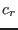
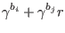
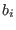
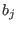
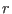
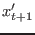
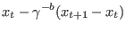
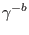

Next: SPSA Up: Optimization Algorithms Previous: PSO Contents
The collision radius  is defined by:
|  |
With an adaptation constant,  and  the respective number of times particles and have collided until now and  a basic collision radius. As can easily seen, the collision radius per particle decreases the more it collides.
When two particles collide, their velocity is reflected and their new position is calculated by:
|  |  |
Thus reflecting the current position around the old position, weighted by . Thus, as the adaptive radius decreases with increased number of collisions, the bounce distance increases. This allows both good convergence and escaping of local minima.
Table 3.5 lists the settings available for this optimizer. ADPSO is an extension of the standard PSO and the PSO settings defined in table 3.4 also apply to this optimization algorithm. For more information on the available settings, see monson_ad_2006.
| Name | Description |
|---|---|
| adaptation-constant | The adaptation constant () with regard to the number of times a particle has collided (0 - 1) |
| collision-radius | The basic collision radius () as a fraction of the parameter space |
Jesse van den Kieboom 2014-02-26